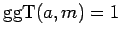
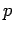
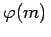
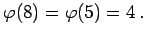

Inhalt Index DeskTop Bronstein

 Algebra und Diskrete Mathematik Elementare Zahlentheorie Kongruenzen und Restklassen
Algebra und Diskrete Mathematik Elementare Zahlentheorie Kongruenzen und Restklassen


Eine Restklasse [a]m mit  nennt man eine prime Restklasse modulo m. Ist p eine Primzahl, dann sind alle von [0]p verschiedenen Restklassen prime Restklassen modulo .
Die primen Restklassen modulo m bilden bezüglich der Restklassenmultiplikation eine ABELsche Gruppe, die prime Restklassengruppe modulo m. Die Ordnung dieser Gruppe ist . Dabei ist  die EULERsche Funktion.
die EULERsche Funktion.
| Beispiel A |
|
[1]8,[3]8,[5]8,[7]8 sind die primen Restklassen modulo 8. |
| Beispiel B |
|
[1]5,[2]5,[3]5,[4]5 sind die primen Restklassen modulo 5. |
| Beispiel C |
|
Es gilt  |